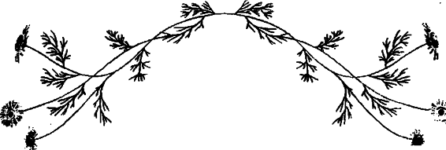
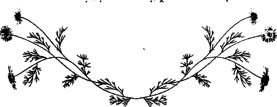

Kırk yaşına bastığınız doğum gününüzün özel bir kutlama gerektirdiğini kimse inkâr edemez. Ben de artık mutluluğundan kendisinin sorumlu olduğunu öğrenmiş, öz saygısı olan ve cesur bir kadın olarak kendi partimi kendim planlamayı ve partimi yanımda götürmeye karar verdim! Partimin yurt dışında, tek başıma, bir grup yabancının yanında ve neredeyse ölümle yüz yüze geldiğim bir deneyimin doğum günümle denk gelmesi, bu işin tuzu biberi oldu.
Tamamen yeni ve farklı, vahşi ve tehlikeli bir macera olduğu için nehir raftingi yapmaya karar verdim. Eleanor Roosevelt’in söylediği gibi ‘Yapamayacağınızı düşündüğünüz işleri yapmalısınız.’ Kosta Ricadaki yağmur ormanları Rio Pacuare ırmağının en hızlı akan bölgesindeki 4. ve 5. parkurlarda yapılan nehir rafting turları sanki tam olarak da benim için hazırlanmıştı. İtalyanca dil kurslarındaki notlarımı, su mataramı, mayomu, sandaletlerimi ve güneş yağımı valize koyup, ‘Kırk Yaş Doğum Günü Kutlaması; Hayatımın En Büyük Macerası: Nehir Raftingi’ için yola koyuldum
Otobüsümüz nehir boyunca uzanan yol kenarında mola verdiğinde, ‘Rio Pacuare’de sağ kalmayı başardım’ yazılı tişörtleris atan satıcıları gördüğümde olacakları önceden anlamalıydım. Bir tane satın alıp, üzerime giydim; benimle birlikte tüm otobüs kahkalarla gülüyordu. Belki de bir grup yabancıyla beraber bu kadar tehlikeli bir parkurda rafting yapmak konusunu daha çok düşünmeliydim, ki bunların pek çoğu daha Önce bu sporu hiç yapmamıştı. Ve muhtemelen bu sporu çok az İngilizce konuşabilen ve rafting dersi olarak sıkça çok sıkı tutunmamız gerektiği gibi gelişigüzel talimatlar veren rehberle yapmamak daha iyi olurdu. Ve belki de Amerika’da hızla çoğalan sorumluluk kanunlarının bir anlamı var, en azından güvelik söz konusu olduğunda, riski üstlenmeyi teklif ediyorlar.
Evet, muhtemelen tahmin ettiniz. Daha başlayalı çok olmadan bottan yuvarlanıp küçük bir çağlayanın girdabına (onlar ‘su basınçlı’ diyorlar, bense ‘cehennem’) yakalandım ve döne döne nehrin dibine battım. Ve bu daha yolculuğun başlangıcıydı. Allah’tan başımda kaskım ve can yeleğim vardı. Onlar olmasaydı başıma neler gelmiş olacağını hayal bile edemiyorum. Yine de çarptığım onca kayanının bıraktığı yara izlerinden ve tüm o yuttuğum sudan bahsetmiyorum bile.
Pazarlık ettiğimden daha fazlasını almakla meşgulken bende hayada ilgili bir ilahi bir anlayış gelişti. O muhteşem, vahşi nehir suları beni fırlatıp sürüklerken ve bir paçavra top gibi suya batıp çıkarken, zihnim tamamen başka bir yerdeydi. Bir şekilde ayaklarımı, olması gerektiği gibi, suyun aşağıya doğru akışına göre uzatmayı başarmıştım. Ve başımı suyun üstünde tutabilmek için elimden gelenin en iyisini yapıyordum ki bu neredeyse imkânsızdı. Nefes almaya çalışmak ve yeterli havayı alamamak korkunçtu. Fakat durumun katıksız dehşeti ve ölebileceğimi bildiğim halde, inanılmaz bir şekilde sakindim.
Hey. Nehrin en hızlı aktığı yerde suya düştüm. Tanrım, nefes almaya çalışmak ciğerlerimi gerçekten çok acıtıyor. Vay. Ölebilirim! diye düşünüyordum. Tüm bu olanlara, ölmeye ya da yaşamaya oldukça tarafsız bir şekilde yaklaşabiliyordum ve farklı bir huzur içinde adeta kendimi dışarıdan seyredebiliyordum. Belki de yapmış olduğum tüm o Budist meditasyon çalışmalarının ve okumuş olduğum tüm o ‘önem vermemek’ kitaplarının yararını görüyordum.
Daha sonra o gün hayatta kalmamın asıl sebebinin nehirle boğuşup, çok büyük bir güçle akan suya karşı yüzmeye çalışmayıp, nasıl yaptıysam, kendimi olayların ve suyun akışına bırakmış olmam olduğunu söylediler. Nehrin alıp beni götürmek istediği yere götürmesine izin vermiştim. Aslında üç tane girdabın içinden geçmiştim ve bu her seferinde daha kolay olmuştu.
Bu, günün en önemli olayı olmuştu. Tüm diğer raftingci- ler suyun kenarına çıktılar, insanlar dualar edip ağlıyor ve pek çoğu da gözlerinin önüne serilen bu dehşetengiz durumu seyrediyordu. Nehrin her iki kıyısını birleştiren pek çok halat vardı ve deneyimli kayıkçılar beni kurtarmak için çalışmalara başladı. Oldukça büyük bir manzara vardı.
Daha sonra rehberler kurtarma operasyonu sırasında oldukça şaşırtıcı bir biçimde çok nazik olduğumu anlattılar. Ben bunların hiçbirini hatırlamıyorum. İçten içe adamın tekinin tişörtüne yapışıp ‘Hemen beni buradan çıkartın!’ diye bağırmak istediğime eminim. Fakat gerçekte kano bana yaklaştığında elimi çıkarıp uysal bir şekilde “Bana yardım edebilir misiniz lütfen,” demişim. Lütfen? Gerçekten bunu söyledim mi? Sonradan pek çok kezk urtarıcıların çaresizce sudan çıkmak isteyen kişilerin hareketleri yüzünden nerdeyse boğulacak hale geldiğini öğrendim.
Kıyıya götürülüp tıbbi destek almaya başladığımda etraftaki pek çok kişi neşeyle beni alkışlamaya başladı ve pek çok yakışıklı Kosta Ricali delikanlı beni kutlamaya geldi. Çevremdekilerin ilgisini çekmekten ve yaşadığım anın zevkini çıkarıyordum. Ta ki bota geri binip nehrin aşağısına gitmem gerektiğini söyledikleri ana kadar. Gerçekten böyle bir şey yapmaya hiç mi hiç niyetim yoktu ama başka bir şansımın olmadığını biliyordum. Ayrıca tekrar bota binip raftinge devam etmemle herkesin moralinin yerine geldiğini de söyleyebilirim.
O gün öğrendiğim şeylerden teki, yapabileceğinizin en iyisi yapmalısınız -ve sizin en iyiniz pek çok kez oldukça yeterlidir. Bazen bottan düşersiniz ve tekrar bota binip nehirdeki yolculuğa devam etmeniz gerekir. Ve bazen bir zorluğun üstesinden gelmenin en iyi yolu, olayları akışına bırakmaktır! Savaşmayın. Bırakın, zor olsun. Olayların bu şekilde olduğunu bilin, önemli olan sizin buna verdiğiniz tepkidir. Teslim olmak hiçbir şey yapmayıp pasifleşmek değildir. Ya da mükemmel olmak. Tam tersine, kendinizi bu deneyimi yaşamaya bırakmak ve onu kontrol etmeye çalışmamak demek olan aktif bir durumdur.
O gün nasıl hayatta kaldığımı ve bu mücadeleyle nasıl baş ettiğimi asla unutmayacağım -kim unutabilir ki? Hatta daha da önemlisi, bu Vahşi suların hayatımı nasıl yaşama konusunda bana verdiği ders için minnettar olup hiç aklımdan çıkarmayacağım.

Büyük Okyanus'un ortasında batan gemiden tahliye sandalıyla ayrılan bir adam vardı.
Bu adam yirmi bir gün boyunca okyanusun ortasında çaresizce kurtarılmayı bekledi.
Nihayet yeri tespit edilen adam mutlu sona ulaştı. Bir gün Rickenbacker adlı bu adamla karşılaşan, Amerikalı ünlü yazar Dale Carnegie, ona yaşadığı bu büyük tecrübeden neler öğrendiğini sordu. Adamın verdiği cevap oldukça düşündürücüydü:
"Bu tecrübeden edindiğim en büyük ders, insanın içebileceği kadar tatlı suyu ve yiyebileceği kadar ekmeği olduktan sonra,
h ayatta hiçbir şeyden şikayet etmemesig erektiğidir."